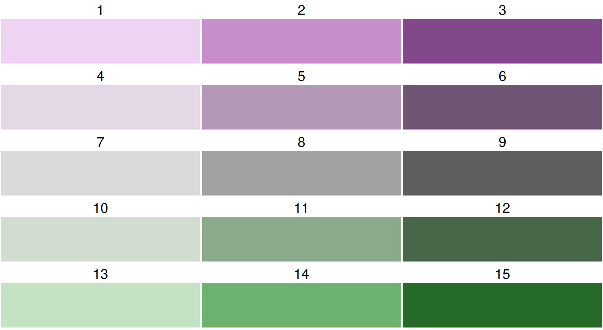
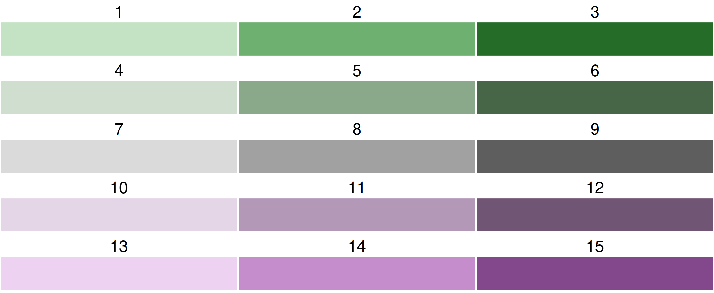
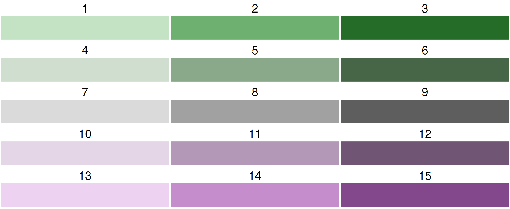

About the data
A spatial data object contained in tmap is called World. It is a data frame with a row for each country. The columns are the following data variables plus an additional geometry column which contains the geometries (see sf package):
names(World)
#> [1] "iso_a3" "name" "sovereignt" "continent" "area"
#> [6] "pop_est" "pop_est_dens" "economy" "income_grp" "gdp_cap_est"
#> [11] "life_exp" "well_being" "footprint" "HPI" "inequality"
#> [16] "gender" "press" "geometry"A bivariate choropleth is a choropleth where the polygon fill color is used to visualize two data variables. In this example we’ll analyse the economic and gender inequality.
Step 1: minimal working example
tm_shape(World) +
tm_polygons(fill = tm_vars(c("gender", "inequality"), multivariate = TRUE)) +
tm_crs("auto")
#> Labels abbreviated by the first letters, e.g.: "20 to 30" => "2"
The use of tm_vars() is required in order to specify a multivariate mapping. See vignette for more information and other use cases. For now, we specify a vector of two variables, and set multivariate to TRUE. Recall that fill = c("gender", "inequality") will create two facets, one for each map (see vignette).
Step 2: color palette
By default, a purple-green bivariate palette is used, more specifically, "pu_gn_bivs" from the package cols4all.
Bivariate color palettes in cols4all
By default, a purple-green bivariate palette is used, more specifically, "pu_gn_bivs" from the package cols4all. The "bivs" suffix stands for sequential x sequential. There are four of these bivariate palette types.

Flipping
All bivariate palettes can be flipped. For this, the development version of cols4all is required. We use the bivariate sequential x diverging palette with 3 columns and 5 rows.



Note that we need the double "\\" becouase a single one is used as escape character.
 

Using cols4all palettes in tmap
A bivariate color palette can be specified in tmap via tm_scale_bivariate:
tm_shape(World) +
tm_polygons(
fill = tm_vars(c("gender", "inequality"), multivariate = TRUE),
fill.scale =
tm_scale_bivariate(values = "//bu_br_bivs")) +
tm_crs("auto")
#> Labels abbreviated by the first letters, e.g.: "20 to 30" => "2"
One inconvenience is that the origin of the palettes plotted above (with c4a_plot()) is top left, but the origin of a bivariate color legend in tmap is bottom right. Therefore, the diagonal prefixes need to be the other way round.
Using custom bivariate palettes in tmap
tm_shape(World) +
tm_polygons(
fill = tm_vars(c("gender", "inequality"), multivariate = TRUE),
fill.scale =
tm_scale_bivariate(values =
matrix(c("#E8E8E8", "#E4ACAC", "#C85A5A",
"#B0D5DF", "#AD9EA5", "#985356",
"#64ACBE", "#627F8C", "#574249"),
byrow = TRUE, ncol = 3))) +
tm_crs("auto")
#> Labels abbreviated by the first letters, e.g.: "20 to 30" => "2"
This palette is also known as "stevens.bluered". Note that this is not the most color blind friendly one. Check out c4a_gui() to analyse color blind friendliness, also for custom palettes.
Step 3: changing the individual scales
Let’s create three levels for each variable, and assign the intuitive labels, e.g. L, M, and H, standing for low, medium and high inequality.
tm_shape(World) +
tm_polygons(
fill = tm_vars(c("gender", "inequality"), multivariate = TRUE),
fill.scale =
tm_scale_bivariate(
scale1 = tm_scale_intervals(style = "kmeans", n = 3, labels = c("L", "M", "H")),
scale2 = tm_scale_intervals(style = "kmeans", n = 3, labels = c("L", "M", "H")),
values = "bu_br_bivs")) +
tm_crs("auto")
#> Labels abbreviated by the first letters, e.g.: "L" => "L"Step 4: changing the legend
tm_shape(World) +
tm_polygons(
fill = tm_vars(c("gender", "inequality"), multivariate = TRUE),
fill.scale =
tm_scale_bivariate(
scale1 = tm_scale_intervals(style = "kmeans", n = 3, labels = c("L", "M", "H")),
scale2 = tm_scale_intervals(style = "kmeans", n = 3, labels = c("L", "M", "H")),
values = "bu_br_bivs"),
fill.legend = tm_legend_bivariate(
xlab = "Gender",
ylab = "Economic",
xlab.size = 1,
ylab.size = 1,
item.r = 0,
item.width = 2,
item.height = 2,
text.size = 1)) +
tm_title("Inequality per country", z = 0) +
tm_crs("auto") +
tm_layout(inner.margins = c(0, 0.15, 0.02, 0.02)) +
tm_components(position = c("left", "bottom"), frame = FALSE)
#> Labels abbreviated by the first letters, e.g.: "L" => "L"